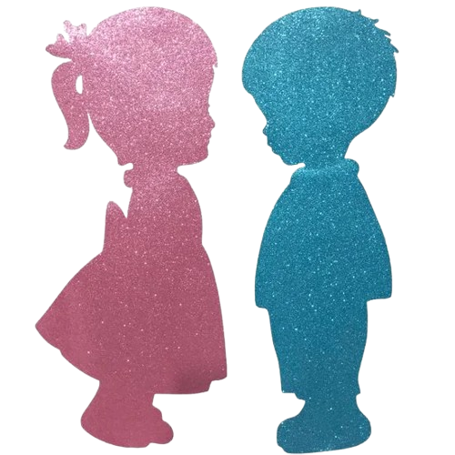

<p-menubar [model]="items">
  <ng-template pTemplate="item" let-item let-root="root">
    <a pRipple class="flex align-items-center p-menuitem-link" (click)="navigateTo(item.navigateRoute)">
      <span [class]="item.icon"></span>
      <span [ngStyle]="{color: 'var(--primary-color)'}" class="ml-2">{{ item.label }}</span>
      <p-badge *ngIf="item.badge" [ngClass]="{ 'ml-auto': !root, 'ml-2': root }" [value]="item.badge" />
    </a>
  </ng-template>
  <div class="flex justify-content-end align-items-center gap-2 search-container">
    <div (click)="openNotification()" class="flex justify-content-center align-items-center mr-4 cursor-pointer">
      <span class="pi pi-bell notification"></span>
    </div>
    <!-- <p-avatar image="../../" shape="circle" size="large" /> -->
    
  </div>
</p-menubar>
